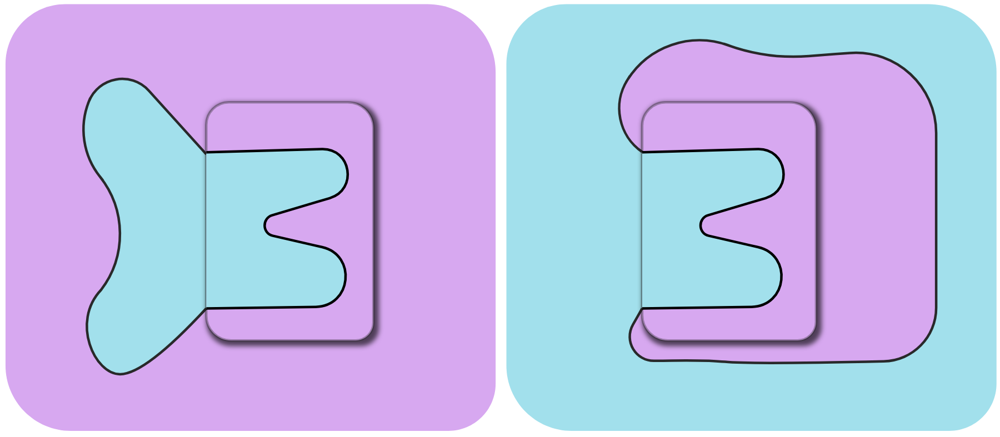
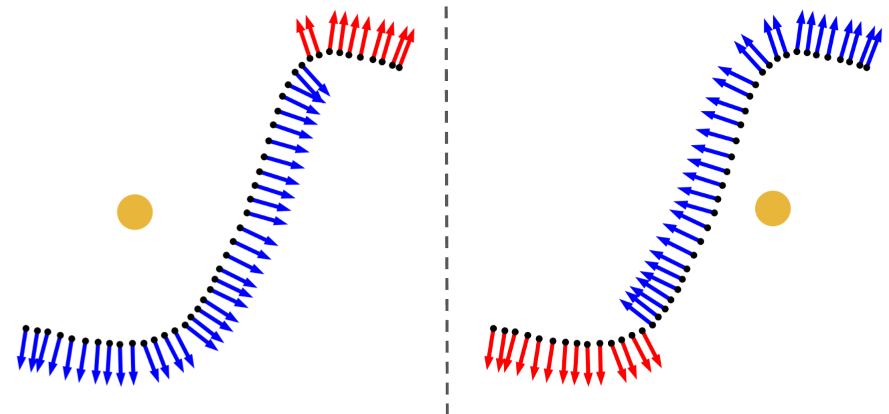
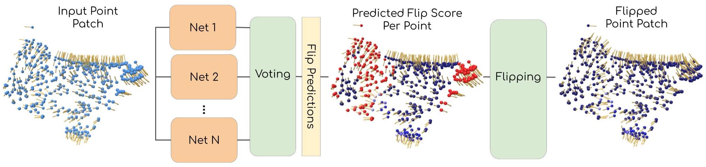

Dipole Normal Propagation Overview
Locally, defining what is inside or the outside of the surface ((i.e., which direction the *surface* normal points)), is not well defined:

The orientation of the surface in the indicated square, can not be determined without global context of the rest of the shape.
To alleviate this problem, we divide the orientation problem into two steps: Local and Global.
We start by orienting each local patch coherently: meaning that all normals in the patch should point either inside or outside the shape.
Locally, patches can be very complicated and non-convex, and constructing a hand crafted technique can be especially challenging.
Instead, we learn the correct orientation using a neural network,
trained on ground truth point clouds sampled from oriented meshes.
Initially, the points are oriented according to a reference point (yellow) placed at the center mass of the patch.

Then, an ensemble of networks decides which points ought to be corrected.
Our network is trained to classify the incoherent point normals (in red).
After we flip the incoherent point normals, we obtain a coherently oriented patch.

After a collection of coherent patches is constructed,
we use a robust and stable dipole propagation technique to align the local patches Globally.
Starting from the flattest patch, a dipole field from each point is iteratively constructed and used to determine the orientation for the rest of the patches.
At each step of the algorithm, the patch that has the strongest interaction with the field is selected,
and flipped (if needed) to align with the field according to the majority of its points.
The field is constructed globally, meaning that all previously oriented patches contribute to the total dipole field, giving global context at each step of the propagation.
In addition, the network-predicted confidence scores are used as the dipole magnitude of each point,
to prevent accumulative propagation error from uncertain points.

This however does not requires a long time to compute, because a closed solution for the field at each point is available.
Also, because the dipole field arise from a solution to the Poisson equation which is linear,
the contribution of patches is simply summed up to compute the total field.
Allowing to only compute the delta contributions of each newly oriented patch in the iterative propagation process.